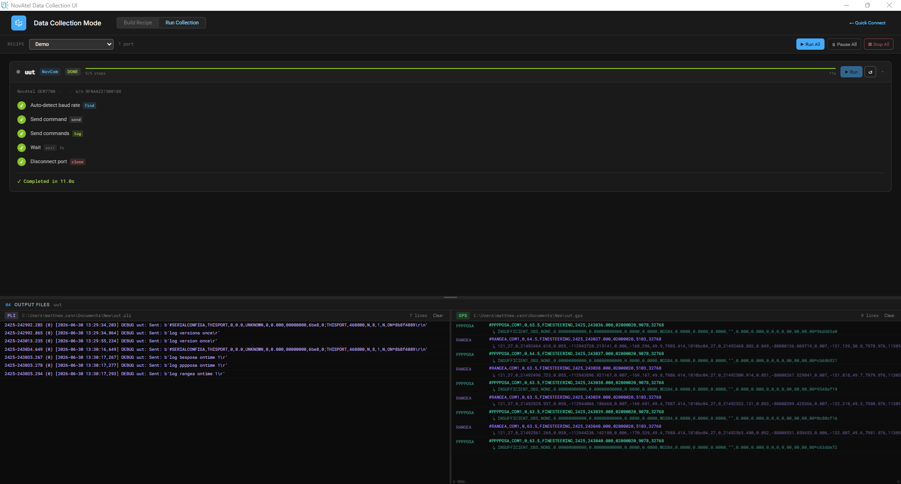
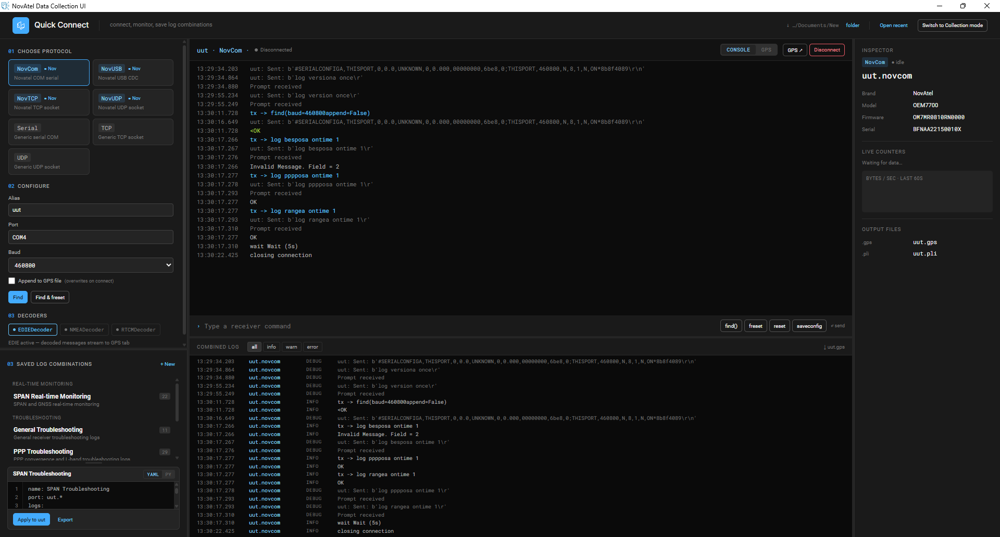

FlightDeck — GNSS Hardware Test Console

Hexagon | NovAtel
Hardware test engineers at NovAtel rely on GNSS receivers configured and operated through a fragile, per-device command-line workflow. I designed and built a full-stack browser-based console that replaces that workflow end to end — giving engineers real-time control over receiver connections, live telemetry, and automated test sequences from a single desktop application. I was the sole developer across requirements, architecture, backend, frontend, hardware integration, CI/CD, and documentation for the initial release milestones.
Key Accomplishments
🏗️ Architecture & Real-Time Systems
- Designed a hardware abstraction layer that unifies Serial, USB, TCP, and UDP receiver connections behind a single async interface, enabling reliable concurrent multi-port operation
- Built an event-driven WebSocket broker so the UI reflects live hardware state, telemetry, and streaming logs without any client-side polling
- Implemented a layered device-identification pipeline with multiple fallback parsing strategies, keeping the tool reliable across receiver firmware variation
⚙️ Automation & Workflow
- Built an asynchronous recipe-automation engine for multi-step test sequences with pause, resume, skip, and abort controls — removing repetitive manual command entry from long-duration data collection runs
- Designed a two-tier configuration system (built-in + user-defined) so engineers could rely on standard test configurations while still customizing and sharing their own
- Added a generated-script export feature so any saved test sequence can be reproduced outside the application
📦 Delivery & Packaging
- Packaged the application as a self-contained Windows installer — no separate browser or Python runtime required — for frictionless distribution to test engineers
- Established a CI/CD pipeline with an automated API contract-verification gate and versioned artifact publishing on every release, removing manual distribution steps
Quantifiable Impact
- 🔌 Replaced a per-device CLI scripting workflow across 8+ hardware test campaigns
- ⚡ Reduced multi-port connection setup from a multi-step manual process to a single UI interaction
- ⏱️ Eliminated repeated manual command entry on long-duration runs (300s–10min+) via recipe automation
- 🚀 Zero manual steps from merge to distributed installer via CI/CD
Screenshots


Back
Get In Touch
If you have any questions or want to get in touch, please feel free to contact me!